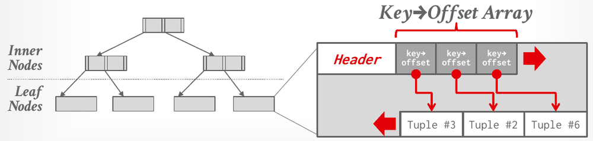
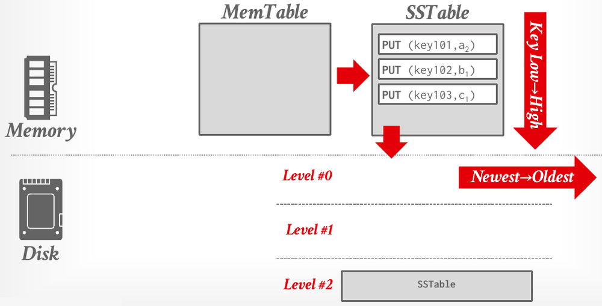
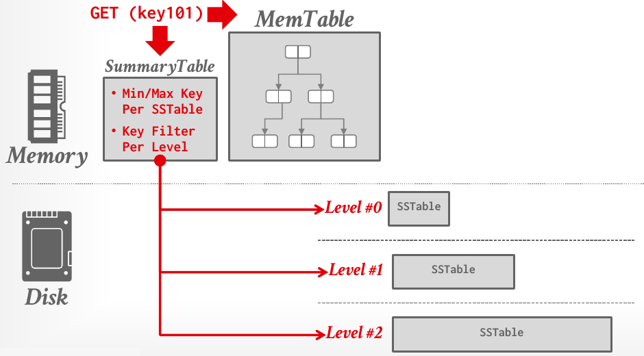
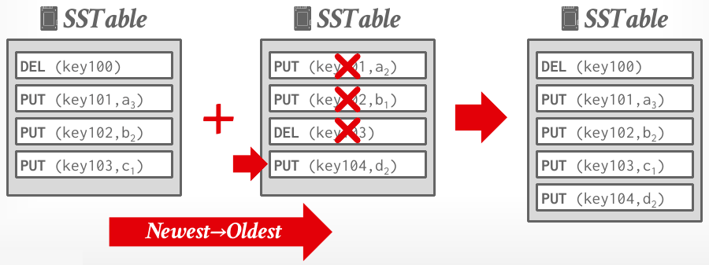
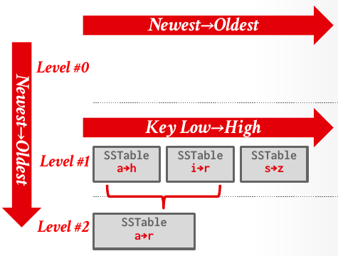
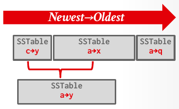

Database Internals in Go · Unit 1 · Lesson 3
Index-Organized and Log-Structured Storage
Two alternatives to slotted heap pages: keeping a table's tuples inside an index, and never updating anything in place.
Lesson 2 ended with the costs of tuple-oriented storage (fragmentation, useless disk I/O and random disk I/O) and with storage systems that can't overwrite a page at all, only create new ones. Lecture #05 presents two other page layouts. Index-organized storage keeps a table's tuples sorted inside an index. Log-structured storage never updates in place: it appends every change, sorts the changes in memory, writes them out sequentially and merges them later. RocksDB uses the second design, and log-structured storage managers are more common today than in previous decades.
Lesson 1: why does a disk-oriented DBMS try to maximize sequential access?
scores(name, pts) holds (A, 30), (B, 20), (C, 20), (D, 20), (E, 10). For D, what are RANK() OVER (ORDER BY pts DESC) and ROW_NUMBER() OVER (ORDER BY pts DESC, name)?
R(a, b) holds (x, 1), (y, 2), (y, 3), (y, 4). How many tuples does Πa(σb>1(R)) contain in relational algebra, and how many rows does SELECT a FROM R WHERE b > 1; return?
Index-organized storage
A heap table is unsorted. To fetch a tuple by record ID, the DBMS checks the page directory, fetches the page and follows the slot array, but to find a tuple by its value it needs a separate index. Slotted-page heaps and the log-structured storage later in this lesson both work that way.
In index-organized storage, the DBMS instead stores a table's tuples as the value of an index data structure, such as a B+tree, a skip list or a trie, so the index keeps them sorted. The pages still look like slotted pages, with a key→offset array in place of the slot array, and tuples are typically sorted within each page by key. The lecture lists SQLite, MySQL, Oracle and SQL Server as examples.

How a B+tree stays sorted and balanced as tuples come and go is the subject of Unit 3, and you'll build one in Project 2.
#05 Database Storage II, "Index-organized storage" (18:25): from reading a tuple by record ID to storing the tuples inside the index itself.
Log-structured storage
Some storage systems (HDFS, Google Colossus, S3 Express) can't overwrite data in a page; they can only create new pages. Log-structured storage is designed for them. Instead of storing tuples in pages and updating them in place, the DBMS keeps a log of changes to tuples. Each entry records one PUT (the tuple's new contents) or one DELETE. The idea comes from log-structured file systems and from log-structured merge trees (LSM trees), first proposed in 1996.
Each log record must contain the tuple's unique identifier, its key. A PUT record also contains the tuple's contents, and a DELETE record marks the tuple as deleted. As the application changes the database, the DBMS appends records without checking previous log records: a PUT doesn't look for an older version to overwrite, and a DELETE doesn't look for the tuple it deletes.
Not the recovery log
This log is the table: it's how the data is stored. It has nothing to do with the write-ahead log a DBMS keeps for crash recovery, which comes in Unit 9.
Writes: from MemTable to SSTable
Changes first go into an in-memory structure called the MemTable, which is fast. When it fills up, the DBMS sorts its contents by key and writes them out sequentially to disk as a sorted-string table (SSTable). In the lecture's example, the MemTable receives PUT(key101, a1), PUT(key102, b1), PUT(key101, a2) and PUT(key103, c1), and the flushed SSTable holds three records, in key order: PUT(key101, a2), PUT(key102, b1), PUT(key103, c1). Only key101's latest value is written.

Because SSTables are immutable and written sequentially, this design causes less random disk I/O, and it maps well onto append-only cloud storage. Flushed SSTables land in Level #0, ordered from newest to oldest, and are later merged into Level #1, Level #2 and so on.
Reads
To answer GET(key101), the DBMS checks the MemTable first. If the key isn't there, it checks the SSTables. The brute-force way is to go from the newest SSTable to the oldest, binary-searching each, until it finds the key's most recent record. That can be slow, so the DBMS keeps an in-memory SummaryTable with the minimum and maximum key of each SSTable and a key filter per level (for example a Bloom filter), which lets it skip SSTables that can't contain the key.

Only the most recent record for the key counts. If that record is a DELETE, the tuple is gone, even though older SSTables still hold PUTs for it.
#05 Database Storage II, "Log-structured storage" (32:34): the write path, step by step. The next chapter, "Log-structured reads and deletes" (39:39), covers GET, the SummaryTable and the record format.
Compaction
A write-heavy workload piles up a large number of SSTables on disk. So the DBMS periodically compacts them: a sort-merge over several SSTables that keeps only the most recent change for each key. That reclaims wasted space and speeds up reads.

The lecture shows two strategies for deciding what to merge, and when.
Leveled compaction organizes the data into levels, with a size limit for the SSTables of each level. Within a level, SSTables have non-overlapping key ranges, except in Level #0, which holds freshly flushed SSTables whose ranges can overlap. A compaction merges a file from one level into the next lower level, keeping that level's ranges sorted and non-overlapping. Leveled compaction is better for read-heavy workloads.

Universal compaction keeps every SSTable in a single "universal" level, with no hierarchy. The DBMS triggers a compaction when too many SSTables overlap in key range or when they exceed size thresholds. Universal compaction is better for insert-heavy workloads and time-oriented queries.

#05 Database Storage II, "Compaction process" (45:08): the sort-merge example. The chapters "Leveled compaction" (50:11) and "Universal compaction" (59:07) follow.
Trade-offs
Log-structured storage managers are more common today than in previous decades, partly because of RocksDB. In the lecture's summary, the design gives fast sequential writes, which suit append-only storage. In exchange, reads may be slow, because a key's latest record can be in the MemTable or in any of several SSTables, and compaction is expensive. Compaction also causes write amplification: one logical write can turn into several physical writes, because compaction rewrites a record every time it merges the SSTable that holds it.
The lecture's conclusion: log-structured storage is an alternative to the tuple-oriented architecture, ideal for write-heavy workloads because it maximizes sequential disk I/O.
Work it out: trace an LSM
Follow one sequence of operations through the MemTable, two flushes and one compaction. Keys are k1 to k4; assume the MemTable is flushed exactly when the task says.
-
What to think about
An SSTable is sorted by key. Which of k1's two PUTs ends up in it?
The method
Keep the latest record per key, as the lecture's example does with key101, then sort the survivors by key, low to high.
The result
S1 = [PUT(k1, a2), PUT(k2, b1), PUT(k3, c1)]. PUT(k1, a1) never reaches disk.
-
What to think about
A read wants the most recent record for the key. Where does it look first, and can it stop early?
The method
Sort S2 by key. For GET(k2), check the MemTable (empty right after the flush), then the SSTables from newest to oldest, and stop at the first record for k2.
The result
S2 = [DEL(k2), PUT(k3, c2), PUT(k4, d1)]. GET(k2) finds DEL(k2) in S2, the newest SSTable, so k2 is not found. S1 is never consulted, even though it still holds PUT(k2, b1).
-
What to think about
For each key, which input holds its newest record? What does slide 24 do with a DELETE that is the newest record for its key?
The method
Merge the two sorted inputs key by key. When both hold the key, keep S2's record. Keep a DELETE that is the newest record for its key, as DEL(key100) is kept on the slide. Then count k1's writes: the flush wrote it once, and compaction writes the merged output out again.
The result
[PUT(k1, a2), DEL(k2), PUT(k3, c2), PUT(k4, d1)]. k1 was written once at the flush and once by this compaction, so twice for one logical write, and once more for every later compaction that includes it. That is write amplification.
The homework behind these questions
The questions marked HW2 come from CMU's Homework #2: Question 1, with the original figures. Work each one out on paper first, then click the option you got. The quiz tells you at once whether it matches CMU's official answer, and explains why. To compare your working step by step, open the official solutions for Question 1.
Check your understanding
Which statement describes index-organized storage as presented in lecture #05?
Which statement about compaction strategies matches the slides?
HW2 Q1(a): which set lists exactly the problems that CMU's official solution associates with log-structured storage?
HW2 Q1(c): you compare log-structured storage with slotted-page storage for a new system, ignoring indexes and metadata overhead. Which pair contains only statements that the official solution marks true?
Primary sources: CMU 15-445/645 Fall 2025 lecture #05, Database Storage II (slides 17–28, notes §2–4, and the lecture video's chapter list); Homework #2 Q1(a) and Q1(c) with the official solutions.